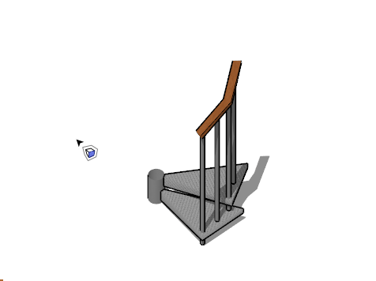

Deep Select Face
Select any face in the model and open its container for editing
Tool Operation
Click a face anywhere in the model to select it and open the containing object at the same time.
Press ESC to close editing and jump back to the root model level.
Click to learn more...